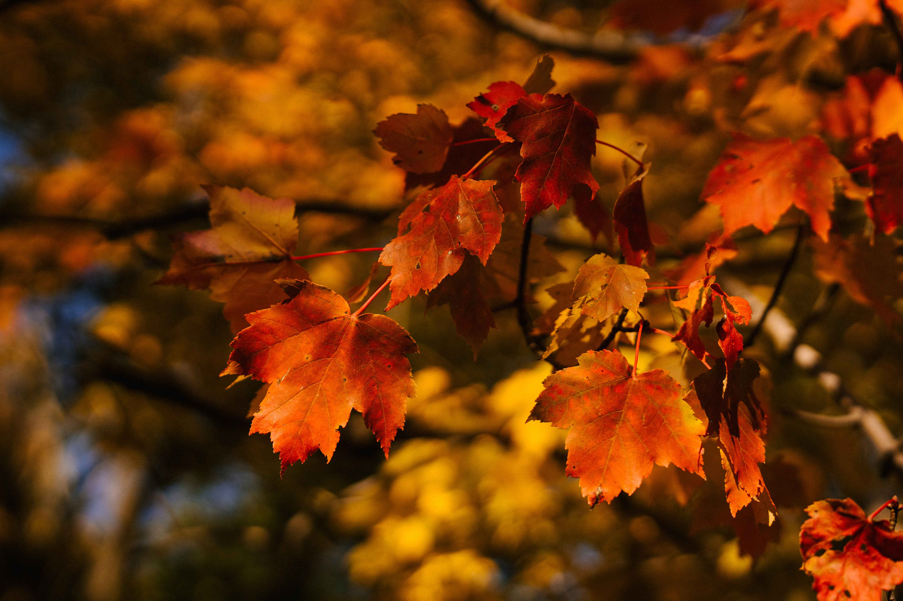
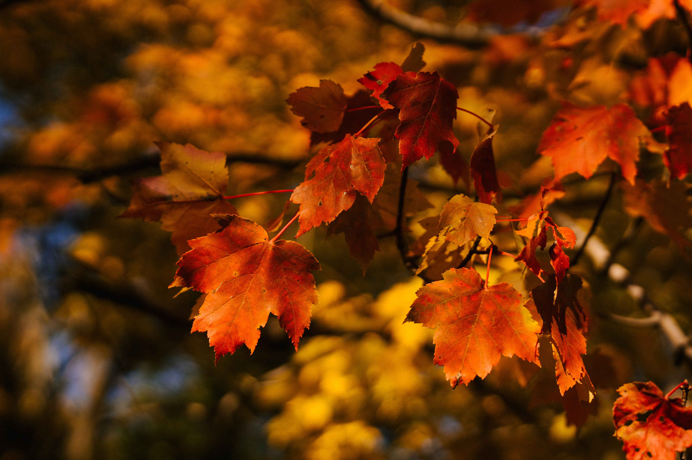
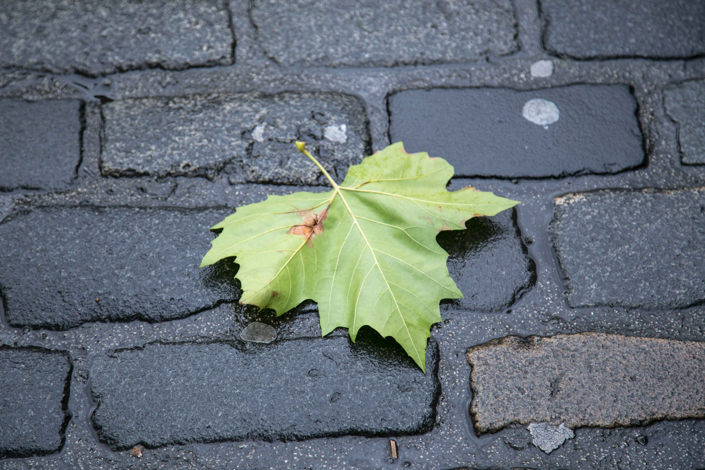
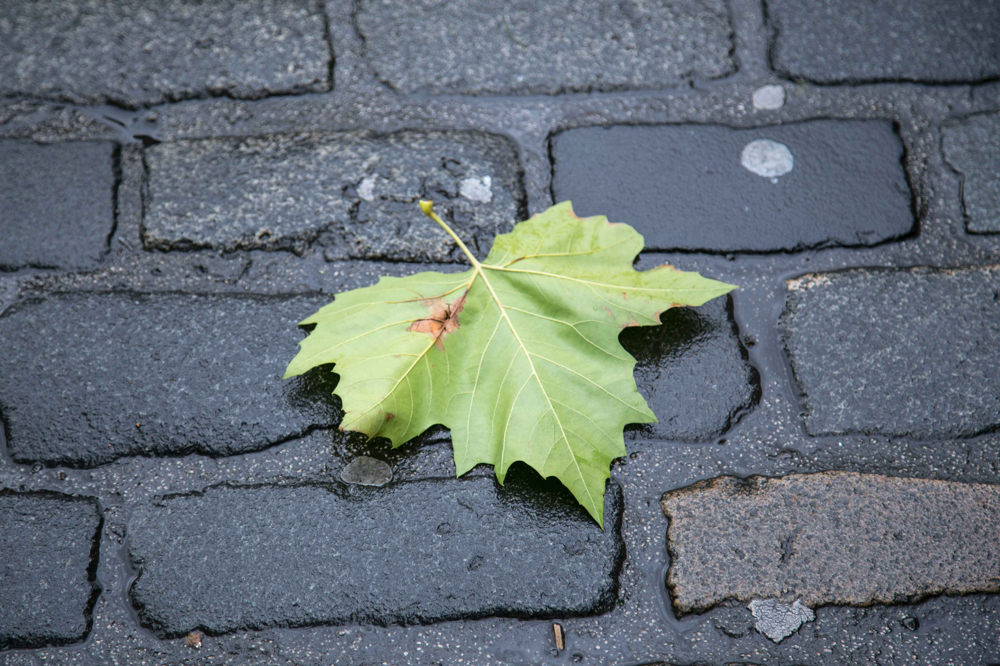
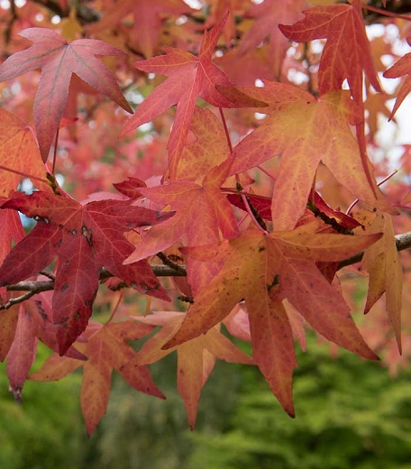
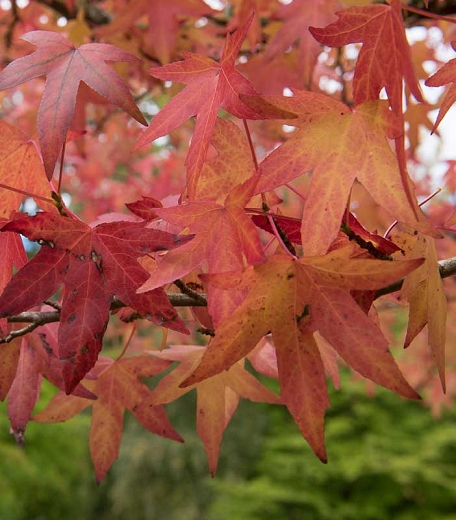
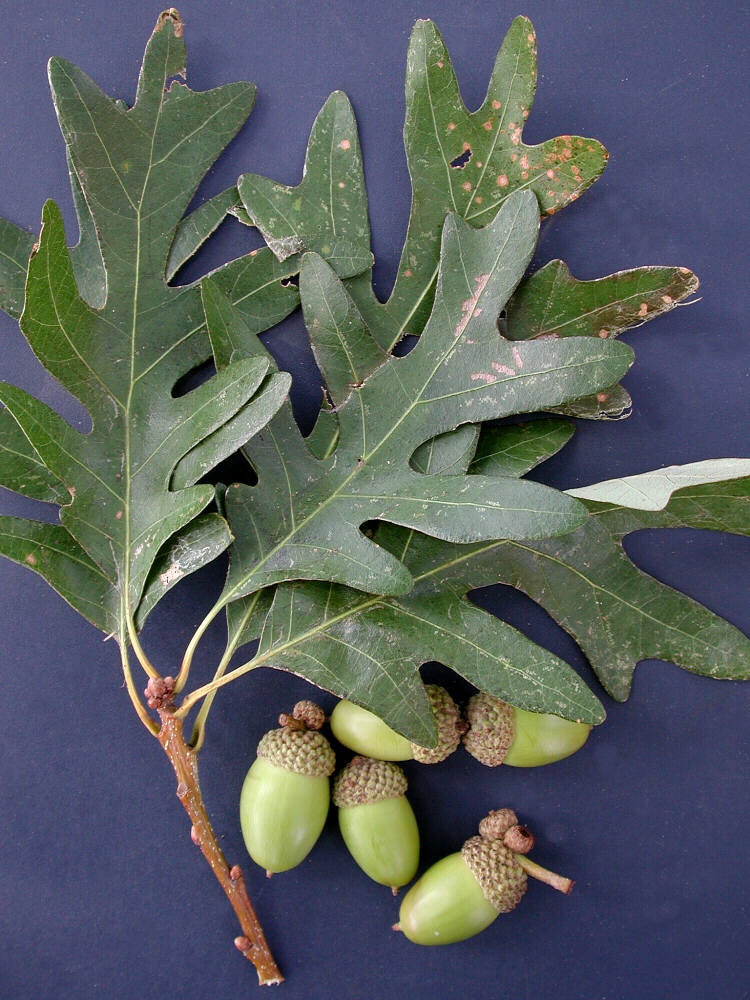
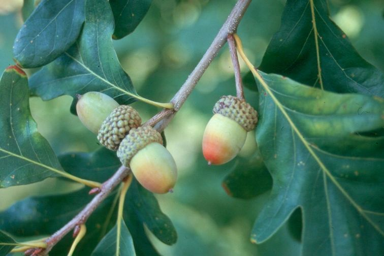
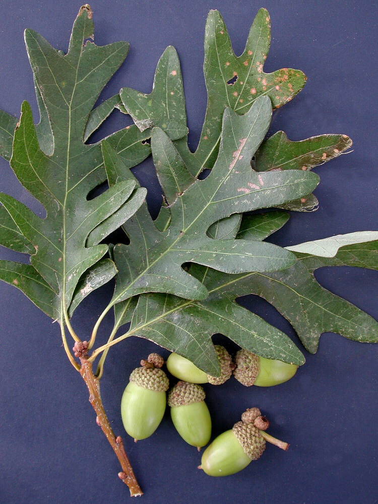
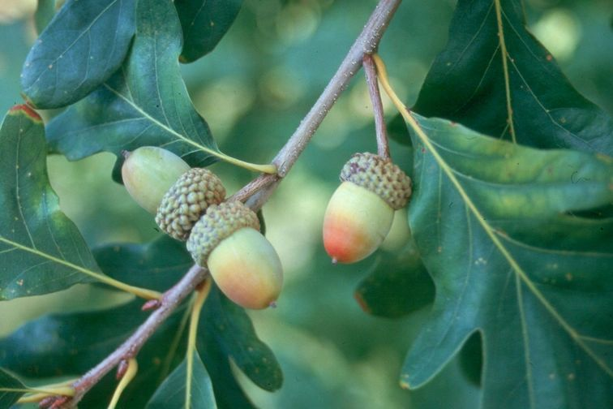

Acer Rubrum
Height: 90 - 120 ft
Lifespan: 150 years
Trunk Diameter: 18 - 35 in
Acer rubrum, the red maple, also known as swamp maple, water maple or
soft maple, is one of the most common and widespread deciduous trees
of eastern and central North America. The U.S. Forest service
recognizes it as the most abundant native tree in eastern North
America
 


Acer Saccharum
Height: 80 - 115 ft
Lifespan: 200 years
Trunk Diameter: 3 ft
Acer saccharum, the sugar maple, is a species of flowering plant in
the soapberry and lychee family Sapindaceae. It is native to the
hardwood forests of eastern Canada and eastern United States. Sugar
maple is best known for being the primary source of maple syrup and
for its brightly colored fall foliage.
Carpinus Caroliniana
Height: 35 - 50 ft
Lifespan: 100 years
Trunk Diameter: 16 - 32 in
Carpinus caroliniana, the American hornbeam, is a small hardwood tree
in the genus Carpinus. American hornbeam is also known as blue-beech,
ironwood, musclewood and muscle beech. It is native to eastern North
America, from Minnesota and southern Ontario east to Maine.
Carya Glabra
Height: 50 - 80 ft
Lifespan: 200 years
Trunk Diameter: 9 - 18 in
Carya glabra, the pignut hickory, is a common, but not abundant
species of hickory in the oak-hickory forest association in the
Eastern United States and Canada. Other common names are pignut, sweet
pignut, coast pignut hickory, smoothbark hickory, swamp hickory, and
broom hickory.
Carya Ovata
Height: 60 - 120 ft
Lifespan: 300 years
Trunk Diameter: 12 - 24 in
Carya ovata, the shagbark hickory, is a common hickory in the Eastern
United States and southeast Canada. It is a large, deciduous tree,
sometimes growing well over 100 ft tall, and lives up to 300 years.
The tallest measured shagbark, located in Savage Gulf, Tennessee, is
over 150 ft tall.
Crataegus Crus-galli
Height: 20 - 35 ft
Lifespan: 20 years
Trunk Diameter: 6 - 9 in
Crataegus crus-galli is a species of hawthorn known by the common
names cockspur hawthorn and cockspur thorn. It is native to eastern
North America from Ontario to Texas to Florida, and it is widely used
in horticulture. It is thought to be the parent of the tetraploid
species Crataegus persimilis.

Fraxinus Americana
Height: 50 - 80 ft
Lifespan: 300 years
Trunk Diameter: 18 - 24 in
Fraxinus americana, the white ash or American ash, is a species of ash
tree native to eastern and central North America. The species is
native to mesophytic hardwood forests from Nova Scotia west to
Minnesota, south to northern Florida, and southwest to eastern Texas.
Fraxinus Pennsylvanica
Height: 39 - 82 feet
Lifespan: 120 years
Trunk Diameter: 18 to 24 in
Fraxinus pennsylvanica, the green ash or red ash, is a species of ash
native to eastern and central North America, from Nova Scotia west to
southeastern Alberta and eastern Colorado, south to northern Florida,
and southwest to Oklahoma and eastern Texas.

Gleditsia Triacanthos
Height: 65 - 100 ft
Lifespan: 120 years
Trunk Diameter: 50 - 90 cm
The honey locust (Gleditsia triacanthos) or thorny honeylocust, is a
deciduous tree in the family Fabaceae, native to central North America
where it is mostly found in the moist soil of river valleys. Honey
locust is highly adaptable to different environments and is an
aggressive, invasive species.
Juniperus Virginiana
Height: 16 to 66 ft
Lifespan: 300 years
Trunk Diameter: 12 to 39 in
Juniperus virginiana, also known as red cedar, is a species of juniper
native to eastern North America from southeastern Canada to the Gulf
of Mexico and east of the Great Plains. Further west it is replaced by
the related Juniperus scopulorum and to the southwest by Juniperus
ashei.
 

Liquidambar Styraciflua
Height: 50 to 150 ft
Lifespan: 400 years
Trunk Diameter: 2 to 3 ft
This plant's genus name Liquidambar was first given by Linnaeus in
1753 from the Latin liquidus ('fluid') and the Arabic ambar ('amber'),
in allusion to the fragrant terebinthine juice or gum which exudes
from the tree. Its specific epithet styraciflua is an old generic name
meaning 'flowing with storax' (a plant resin)
Nyssa Sylvatica
Height: 30 to 50 ft
Lifespan: 650 years
Trunk Diameter: 20 to 39 in
Nyssa sylvatica's genus name, Nyssa, refers to a Greek water nymph;
the species epithet sylvatica refers to its woodland habitat. This
tree is more commonly called the black gum or the sour gum, although
no part of the plant is particularly gummy. Another common name used
occasionally in the Northeast is pepperidge.
Ostrya Virginiana
Height: 59 ft
Lifespan: 150 years
Trunk Diameter: 8 to 20 in
Ostrya virginiana, the American hophornbeam, is a species of Ostrya
native to eastern North America. On mature trees, the bark of the
trunk is rough-textured and greyish brown, dividing into narrow
rectangular strips; this provides the trunk with a slightly shaggy
appearance. The bark of smaller branches is more smooth and gray with
small lenticels.
Prunus Virginiana
Height: 20 to 30 ft
Lifespan: 20 to 40 years
A large, deciduous shrub or small understory tree. Dense clusters of
white flowers are followed by red fruit ripening to dark purple from
August to September (north) or June to August (south). Shrub or small
tree, often forming dense thickets, with dark red or blackish
chokecherries.
 



Quercus Alba
Height: 80 to 100 ft
Lifespan: 450 years
Trunk Diameter: 16 to 25 ft
Quercus alba, the white oak, is one of the prominent hardwoods of
eastern and central North America. It is a long-lived oak, native to
eastern and central North America and found from Minnesota, Ontario,
Quebec, and southern Maine south as far as northern Florida and
eastern Texas.
Quercus Bicolor
Height: *add text*
Lifespan: *add text*
Trunk Diameter: *add text*
*add text*
Quercus Palustris
Height: *add text*
Lifespan: *add text*
Trunk Diameter: *add text*
*add text*
Quercus Phellos
Height: *add text*
Lifespan: *add text*
Trunk Diameter: *add text*
*add text*
Quercus Rubra
Height: *add text*
Lifespan: *add text*
Trunk Diameter: *add text*
*add text*
Quercus Shumardii
Height: *add text* ft
Lifespan: *add text* years
Trunk Diameter: *add text*
*add text*